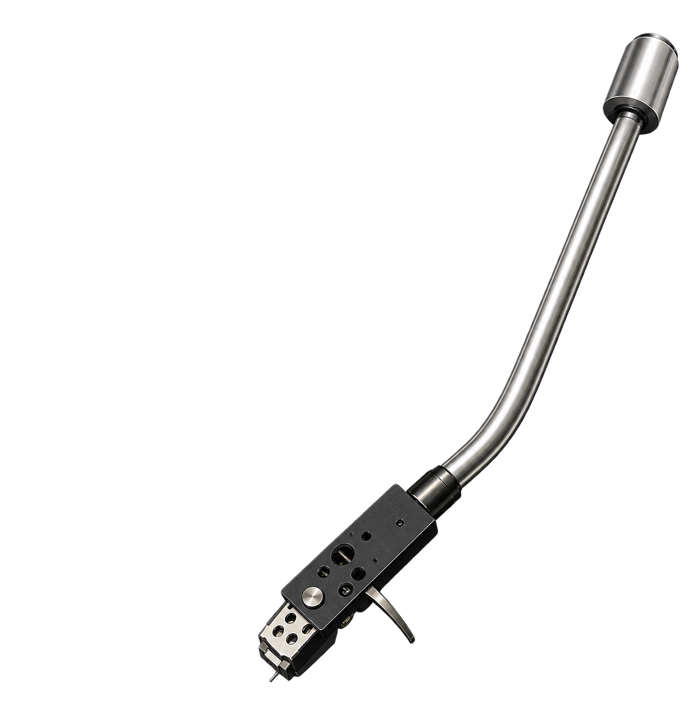

[ A MUSIC PLAYER FOR YOU ]
Music,
your way.
A customizable, aesthetic music player designed to make listening feel personal again.
Your Music
✦ Enough - Deukota /
♣ Get It Together - Télépomusik Lofi Flip /
Pleasure - Dylan Sinclair | SELECT
Smokin Out The Window - Bruno Mars, Anderson .Paak /
Let Me Love You - Mario /
メロMusic for
a better you.

music
travels
further ★
Your Music, Your Space
A clean, minimal interface designed to feel like home.
Fully Customizable
Themes, layouts, and details that match your style.
Play Your Way
Local files, playlists, favorites and queue — all in one place.
Aesthetic by Default
Thoughtful design, tiny details, and a cozy listening experience.
 FAVORITESLittle visual details from the player.
FAVORITESLittle visual details from the player. REPEATMELO's playful controls.
REPEATMELO's playful controls.Made for
real listening.
From your favorite albums to random discoveries, MELO keeps your music close and your experience effortless.


メロディー
happier
with music. ♡
A player that
feels like you.
Change themes, organize your library, and create a listening space that actually feels personal.
Explore Features →PLAYLISTS
QUEUE & FAVORITES
LOCAL FILES
SPOTIFY CONNECT (OPTIONAL)
AND MORE...
IT'S MORE THAN A PLAYER.
IT'S YOURS.
Ready to make
music yours?
Download MELO and start listening your way.
music
travels
further ★
Growing,
one release at a time.
Keep an eye here for new builds, improvements, fixes and experiments.
View releases on GitHub →